1. 프로그램 소개
안녕하세요. Mellodrift(멜로드리프트)는 카테고리와 분위기만 고르면 컨셉, 가사, 음악, 커버 이미지, 뮤직비디오, 유튜브 썸네일까지 한 번에 만들어 주는 AI 음악 영상 자동화 프로그램입니다. 완성된 영상은 바로 유튜브에 올릴 수도 있고, 정해 둔 요일과 시각마다 알아서 만들고 올리도록 맡길 수도 있습니다.
전체 흐름은 이렇습니다. 먼저 AI(OpenAI)가 믹스 전체의 컨셉을 정하고 곡마다 가사를 씁니다. 다음으로 Suno(Kie.ai를 통해 사용)가 노래를 만들고, OpenAI가 커버 그림을 그립니다. 그 곡들을 하나의 롱폼 영상으로 이어 붙이고, 마지막으로 유튜브 썸네일까지 만듭니다.
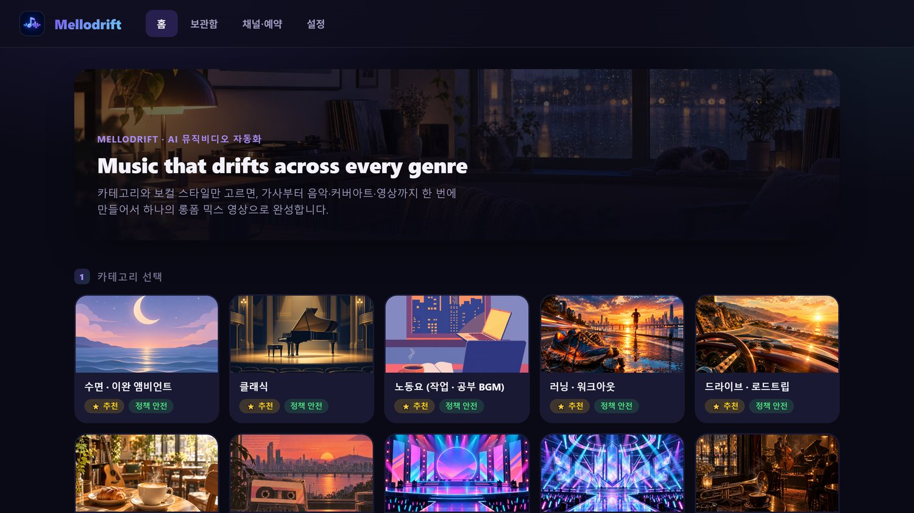
이 프로그램은 외부 서비스(OpenAI, Suno/Kie.ai, Groq, YouTube)를 이용합니다. 각 서비스의 키는 구매자님이 직접 발급받아 프로그램에 입력해야 하며, 사용량에 따른 요금은 각 서비스에서 별도로 부과됩니다. 키 발급 방법은 3장에서 자세히 안내합니다.
| 장 | 내용 |
|---|---|
| 2장 | 설치와 라이선스 인증 |
| 3장 | 키 준비하기 — Kie.ai, OpenAI, Groq, YouTube 연결 |
| 4~9장 | 홈 화면 사용법 — 카테고리, 보컬, 상황, 믹스 설정, 자막과 연출 스타일 |
| 10~14장 | 믹스 만들기, 실패했을 때, 결과 확인, 유튜브 업로드, 보관함 |
| 15~16장 | 채널·예약(자동 운영)과 설정 |
| 17~18장 | 프로그램 메뉴, 활용 팁과 자주 묻는 질문 |
2. 설치와 라이선스
2-1 설치 파일 받기와 설치
구매하시면 이메일로 라이선스 키와 다운로드 링크가 도착합니다. 링크에서 설치 파일, 즉 확장자가 exe인 파일 하나만 내려받아 실행해 주세요. 파일 이름 옆에 붙은 다른 파일들은 자동 업데이트용이니 받지 않으셔도 됩니다.
처음 실행할 때 윈도우가 보안 경고를 보여 줄 수 있습니다. 이때는 추가 정보를 누른 다음 실행을 선택하시면 됩니다. 설치 위치는 원하는 폴더로 바꿀 수 있습니다.
2-2 라이선스 인증
설치가 끝나고 처음 실행하면 라이선스 키를 입력하는 창이 나옵니다. 메일로 받은 키를 그대로 붙여 넣고 활성화 버튼을 누르세요. 인증이 되면 곧바로 프로그램이 시작됩니다. 이 키는 컴퓨터 한 대에 등록되고, 한 번 활성화하면 다음부터는 이 창이 나오지 않습니다.
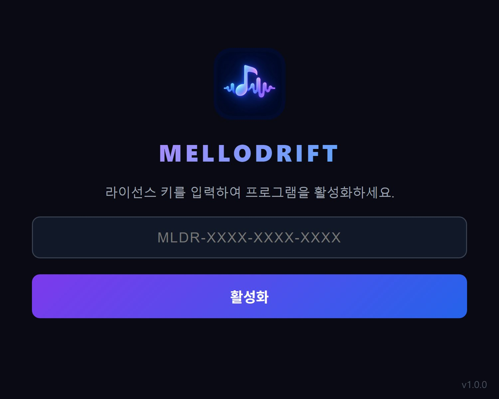
컴퓨터를 바꿀 때는 기존 컴퓨터에서 기기 초기화를 해 주셔야 합니다. 방법은 17장(프로그램 메뉴)에 있습니다.
3. 키 준비하기 (API 키와 유튜브 연결)
Mellodrift가 영상을 만들려면 아래 서비스의 키가 필요합니다. 프로그램의 설정 탭 아래쪽에 API 키 입력란이 있습니다.
| 서비스 | 하는 일 | 필요 여부 | 요금 |
|---|---|---|---|
| Kie.ai (Suno) | 음악 생성 | 필수 | 유료 · 선불 충전 (곡당 약 12크레딧) |
| OpenAI | 컨셉·가사 작성, 커버아트·썸네일 이미지 | 필수 | 유료 · 선결제(충전) 방식 |
| Groq | 자막 타이밍(음성 인식) | 필수 (앱이 확인) | 무료 사용 한도 안에서 사용 |
| YouTube Data API 키 | 입력란이 있으나 선택 사항 | 선택 | 무료 (일일 사용량 한도 있음) |
| YouTube OAuth (클라이언트 ID/시크릿) | 유튜브에 영상 업로드, 자동 운영 | 업로드를 쓸 때 필요 | 무료 |
Kie.ai, OpenAI, Groq 세 개의 키 중 하나라도 비어 있으면 "믹스 생성 시작"을 눌렀을 때 "설정 탭에서 API 키를 먼저 입력해주세요"라는 안내가 나오고 시작되지 않습니다. 업로드를 쓰지 않는다면 유튜브 연결은 건너뛰어도 영상은 만들 수 있습니다.
모든 키는 비밀번호와 같습니다. 다른 사람에게 보여 주거나 캡처·영상·인터넷에 올리지 마세요. 노출됐다면 해당 서비스에서 바로 삭제하고 새로 만들어 프로그램에 다시 입력하세요. 키는 내 컴퓨터의 설정 파일에만 저장되며, 화면에는 마지막 4자리만 표시됩니다.
3-1 Kie.ai API 키 발급과 크레딧 충전 (Suno 음악)
음악은 Kie.ai를 통해 Suno로 만듭니다. 이 서비스는 선불 충전(크레딧) 방식입니다.
먼저 구글에서 kie ai를 검색합니다. 검색창에 입력하면 아래에 관련 검색어가 나타납니다.
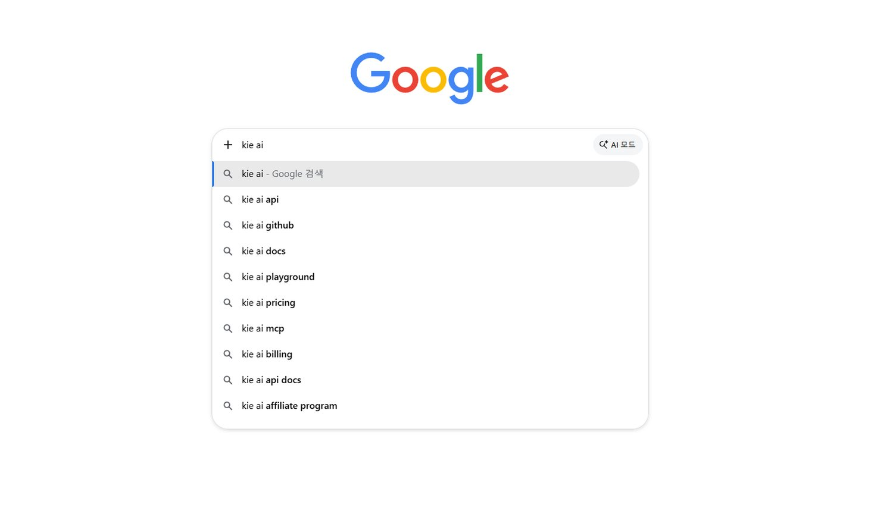
검색 결과 맨 위에 있는 주소가 kie.ai 공식 사이트입니다. 비슷한 이름의 가짜 사이트에 주의하시고, 주소가 정확히 kie.ai인지 확인하세요.
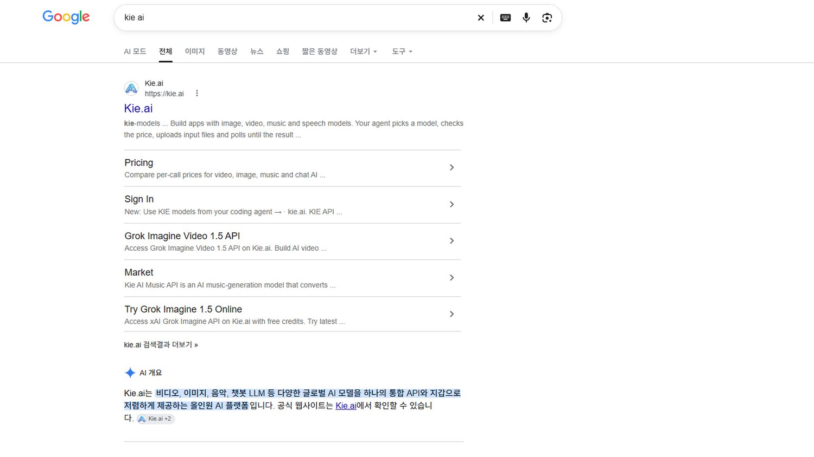
사이트에 들어가면 오른쪽 위에 시작하기 버튼이 있습니다. 눌러 가입을 시작합니다.
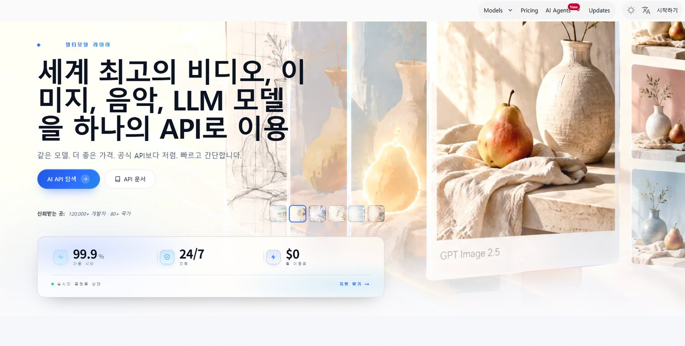
로그인 창에서 구글 계정이나 마이크로소프트 계정 중 하나로 로그인하면 됩니다. 이미 계정이 있다면 아래의 로그인 글자를 누르세요. 보통은 구글 계정이 가장 간편합니다.
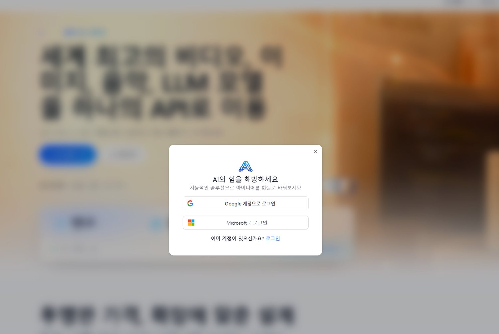
로그인하면 모델 마켓 화면이 열립니다. 왼쪽 메뉴에서 API 키를 누르면 키를 관리하는 화면으로 갑니다. 같은 메뉴에 청구 항목도 있는데, 크레딧 충전은 아래에서 설명합니다.
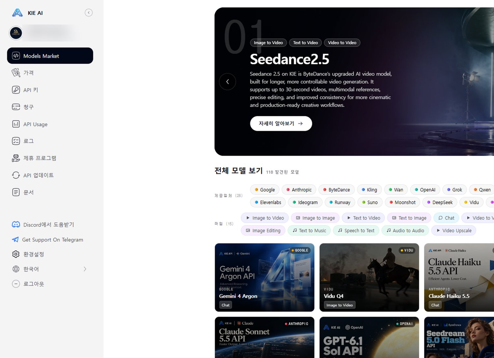
API 키 화면입니다. 목록에는 Default라는 키가 이미 있고, 이름, 키, 생성일, 생성자, 허용된 모델, 안전 지출 한도 같은 정보가 표시됩니다. 새 키를 만들려면 오른쪽 위의 새 키 만들기 버튼을 누릅니다.
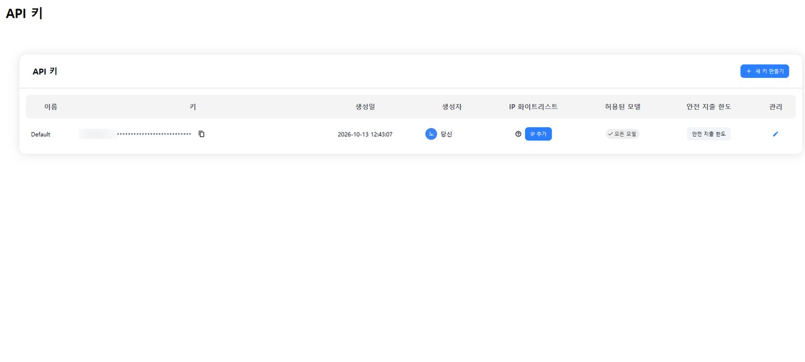
API 키 생성 창이 열립니다. 이름 칸에는 알아보기 쉬운 이름을 적으세요(예: auto key). 아래 모델 접근 제한은 이 키로 쓸 수 있는 모델을 정하는 항목인데, 기본값인 모든 모델을 그대로 두시면 됩니다. 설정을 마쳤다면 만들기를 누릅니다.
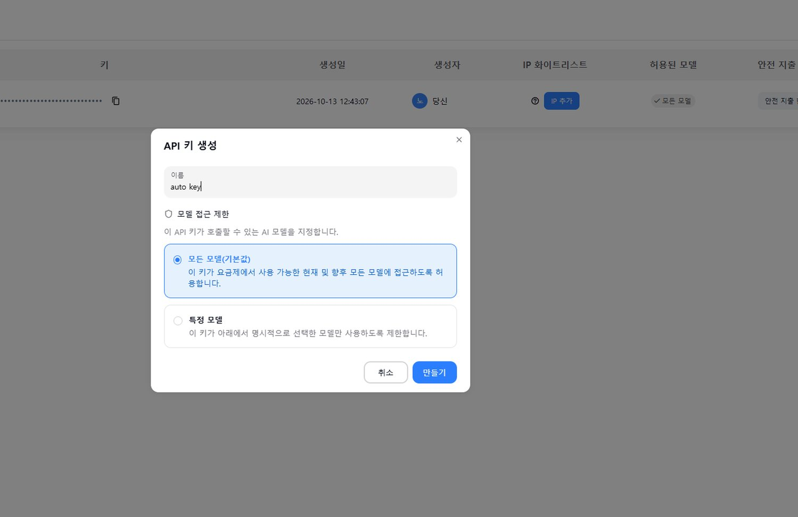
키가 만들어졌습니다. 키 복사 버튼을 눌러 복사한 다음, 메모장 같은 곳에 바로 붙여 넣어 따로 저장해 두세요. 아래의 터미널 명령은 코딩 도구용 안내라서 신경 쓰지 않으셔도 됩니다. 복사를 마쳤으면 완료를 누릅니다. (설명서 화면의 키는 예시 값입니다.)
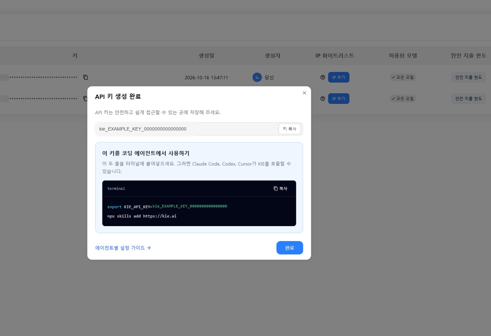
완료를 누르면 목록에 방금 만든 키가 추가됩니다. 키 뒷부분은 점으로 가려져 표시되고, 키 옆에는 복사 아이콘이 있습니다. 필요 없는 키는 오른쪽의 휴지통 아이콘으로 삭제할 수 있고, 키가 노출됐다고 의심될 때도 삭제하고 새로 만드세요.
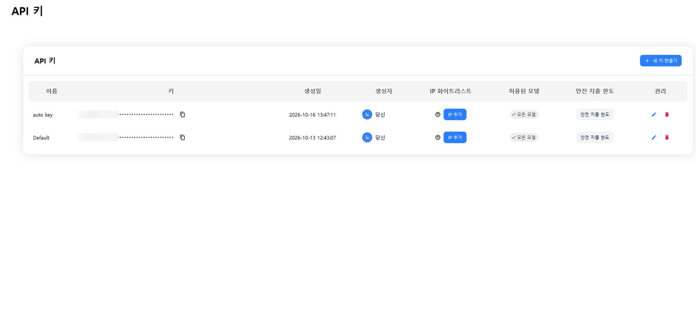
3-1-1 크레딧 충전
왼쪽 메뉴의 청구를 누르면 충전 화면이 열립니다. 왼쪽 잔액 정보에서 현재 남은 크레딧을 확인할 수 있고, 크레딧은 만료되지 않고 언제든지 사용할 수 있다고 안내되어 있습니다. 오른쪽 크레딧 추가에서 패키지를 고릅니다. 5달러는 1,000 크레딧, 50달러는 10,000 크레딧, 500달러는 105,000 크레딧, 1,250달러는 275,000 크레딧입니다. 큰 패키지일수록 크레딧이 더 얹어집니다.
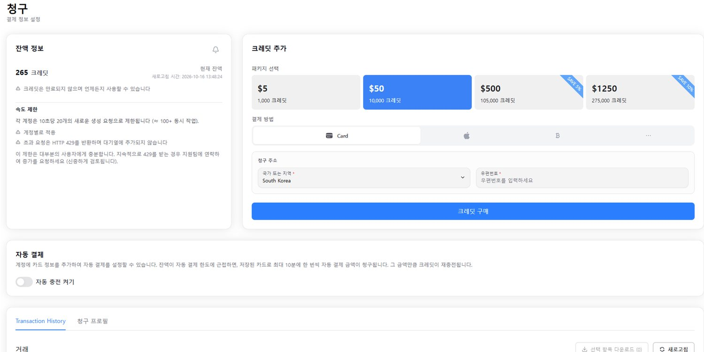
Mellodrift는 곡 하나당 Suno 크레딧이 약 12개 듭니다(5달러 = 1,000 크레딧 기준으로 곡당 약 0.06달러). 처음에는 가장 작은 5달러 패키지로 시험해 보시길 권합니다.
결제 방법은 카드를 비롯해 애플 결제 같은 방법도 보입니다. 청구 주소의 국가를 확인하고 우편번호를 입력한 뒤 크레딧 구매를 누르면 카드 입력 화면으로 넘어갑니다. 아래 자동 결제는 카드 정보를 등록해 두면 잔액이 한도에 가까워질 때 저장된 카드로 자동 충전되는 기능이며, 기본은 꺼져 있습니다. 예상하지 못한 결제를 피하려면 필요할 때만 켜세요. 또 각 계정은 10초마다 새로운 생성 요청 20개로 제한된다는 안내도 읽어 두세요.
크레딧 구매를 누르면 카드 정보를 입력하는 창이 나옵니다. 카드 번호, 유효기간, 보안 코드, 카드에 적힌 이름을 입력하고 Pay 버튼을 누르면 결제됩니다. 카드 정보는 개인 정보이므로 직접 입력해 결제를 진행하세요.
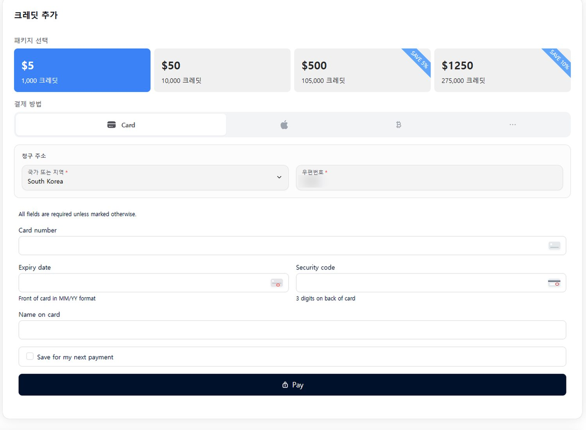
결제가 끝나면 아래 거래 내역에 구매 기록이 남습니다. 날짜와 시간, 구매한 크레딧, 금액이 표시되고, 오른쪽의 송장 다운로드로 영수증을 받을 수 있습니다.
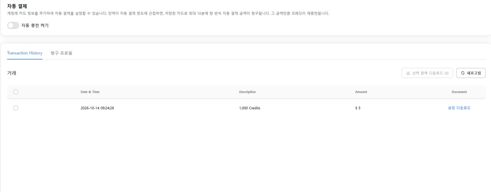
3-2 OpenAI API 키 발급과 크레딧 충전 (컨셉·가사·이미지)
OpenAI API는 사용한 만큼 요금이 차감되는 선결제(충전) 방식의 유료 서비스입니다. OpenAI 사이트에서 직접 결제하셔야 하며, 결제는 이 프로그램과 무관한 별도의 거래입니다. Mellodrift에서는 컨셉과 가사 작성, 커버아트와 썸네일 이미지에 쓰입니다.
먼저 구글에서 open ai platform을 검색합니다.
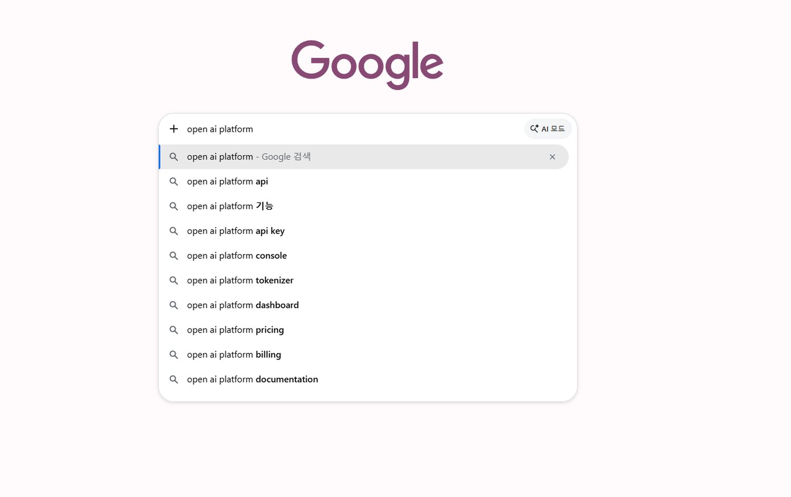
검색 결과 맨 위의 OpenAI Platform이 API를 관리하는 공식 개발자 사이트입니다. 주소가 platform.openai.com인 것을 확인하고 접속하세요.
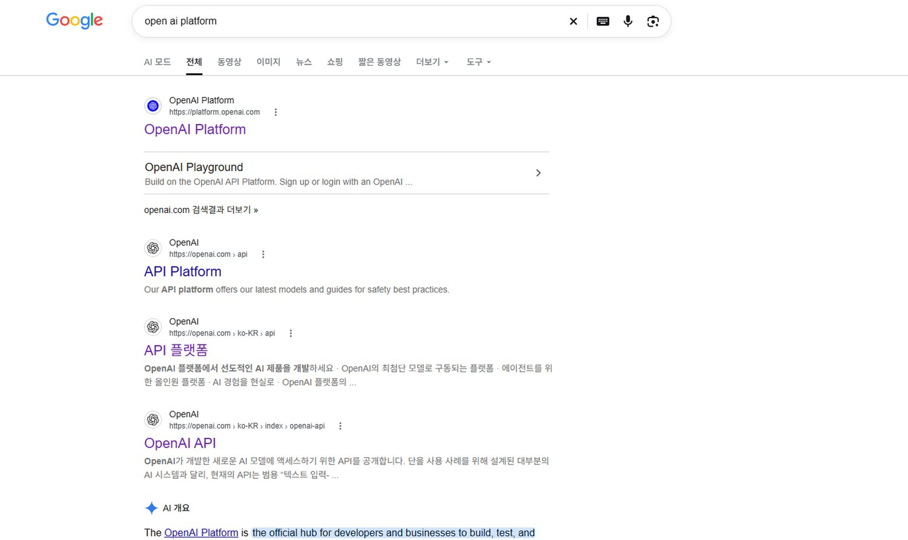
로그인 화면입니다. 이메일 주소를 입력하고 Continue를 누르거나, 구글·애플·마이크로소프트 계정, 또는 전화번호로 계속할 수 있습니다.
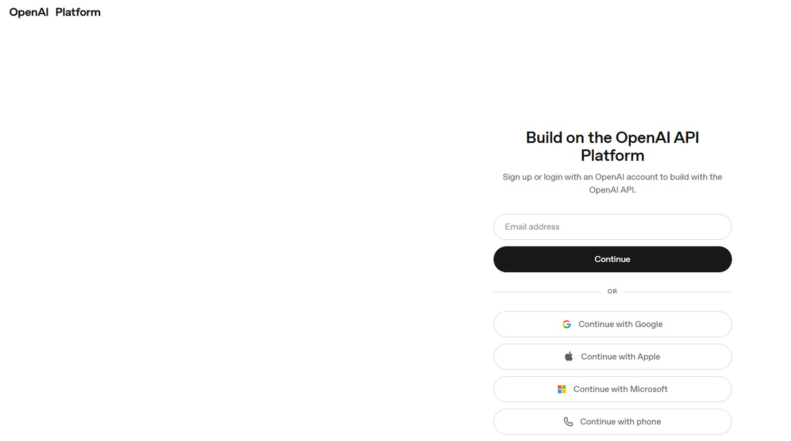
로그인하면 홈 화면이 열립니다. 왼쪽 메뉴에서 API Keys를 누르면 키를 관리하는 화면으로 갑니다. 처음에는 Default project를 그대로 쓰시면 됩니다. 아래쪽에서는 크레딧 잔액과 이번 달 사용량도 확인할 수 있습니다.
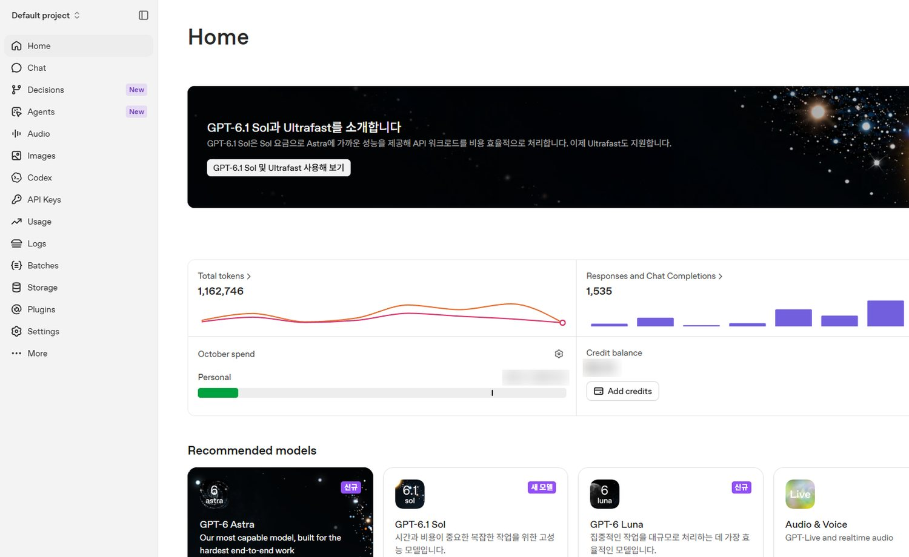
API keys 화면입니다. 지금까지 만든 키가 이름, 상태, 만든 날짜, 만료일, 마지막 사용일과 함께 나옵니다. 상태가 Active이면 사용 중인 키이고, Revoked는 폐기된 키입니다.
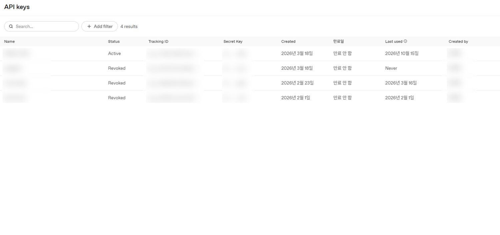
오른쪽 위의 Create new secret key 버튼을 누르면 새 키를 만들 수 있습니다.
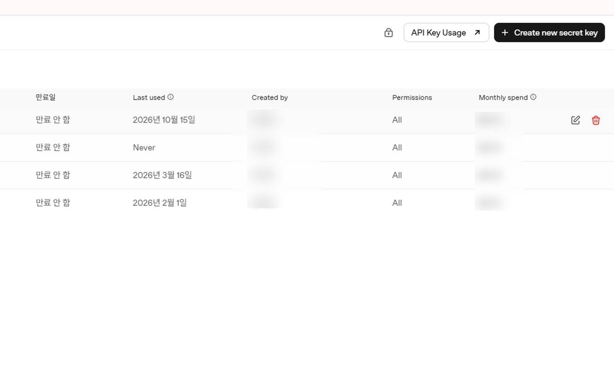
키 생성 창이 열립니다. Owned by는 You를 그대로 두고, Name 칸에 알아보기 쉬운 이름(예: auto key)을 적으세요. Project는 기본 프로젝트를 그대로 둡니다. 만료는 1일, 7일, 30일, 만료 안 함, 사용자 지정 중에서 고를 수 있습니다.
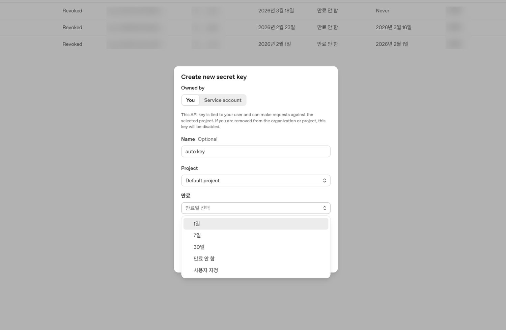
만료 안 함을 고르면 아래에 붉은 안내가 나옵니다. 수명이 긴 키는 유출될 경우 보안 위험이 있으니 공개된 곳에 저장하지 말라는 내용입니다. 만료 기간을 정했다면 만료일 전에 새 키로 바꿔 주셔야 합니다. Permissions는 기본값 All을 그대로 두고 Create secret key를 누릅니다.
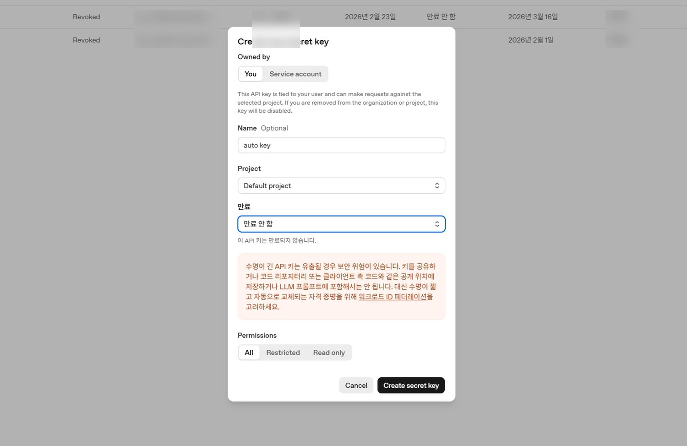
키가 만들어졌습니다. 이 키는 다시 볼 수 없으니 Copy 버튼을 눌러 복사한 다음 메모장 같은 곳에 바로 붙여 넣어 따로 저장해 두세요. 잃어버리면 새 키를 만들어야 합니다. 복사를 마쳤으면 Done을 누릅니다. (설명서 화면의 키는 예시 값입니다.)
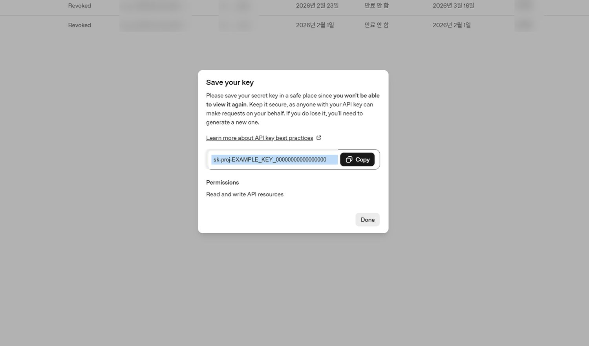
3-2-1 OpenAI 크레딧 충전
설정 메뉴에서 Billing으로 들어가면 Pay as you go, 즉 쓴 만큼 내는 방식의 화면이 열립니다. 잔액이 0달러가 되면 API 요청이 멈춘다고 안내되어 있으니 확인해 주세요. 크레딧을 사려면 Buy credits를 누릅니다.
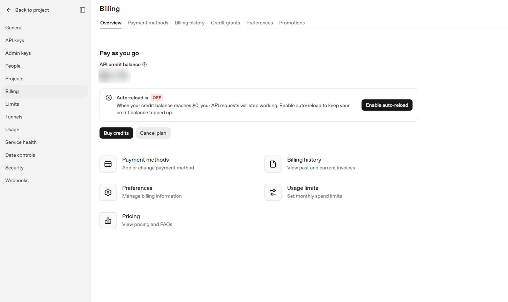
Auto-reload는 처음에 꺼져 있습니다. 켜 두면 잔액이 부족해질 때 자동으로 충전합니다. 아래 Usage limits에서는 월 지출 한도를 설정할 수 있으니 걸어 두시길 권합니다. Buy credits를 누르면 5달러에서 496달러 사이의 금액을 입력하는 창이 열립니다. 처음에는 가장 작은 5달러로 시험해 보세요. 등록된 카드가 없다면 Add payment method를 누릅니다.
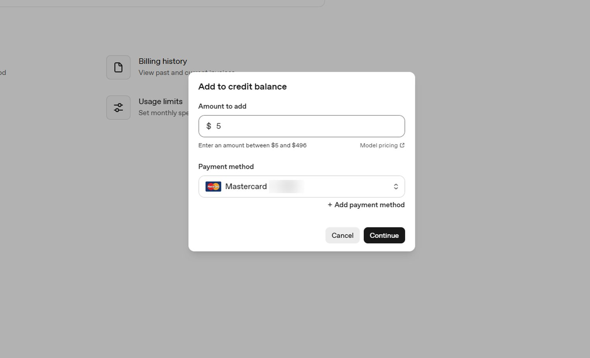
결제 수단 추가 창에서는 카드 번호, 만료 날짜, 보안 코드를 입력합니다. 카드 정보는 개인 정보이므로 직접 입력해 결제를 진행하세요.
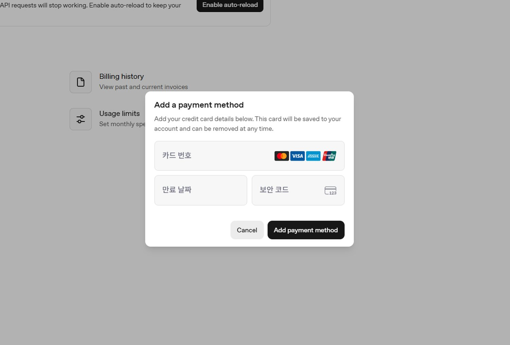
3-3 Groq API 키 발급 (자막 타이밍)
Groq는 가입과 키 발급이 간단하고 무료 사용 한도 안에서 쓸 수 있는 서비스입니다. Mellodrift에서는 자막 타이밍(음성 인식)에 쓰이며, 프로그램이 키가 입력되어 있는지 확인하므로 발급받아 입력해 두세요.
먼저 구글에서 groq를 검색하고, 주소가 정확히 groq.com인 공식 사이트로 접속합니다. 비슷한 이름의 가짜 사이트에 주의하세요.
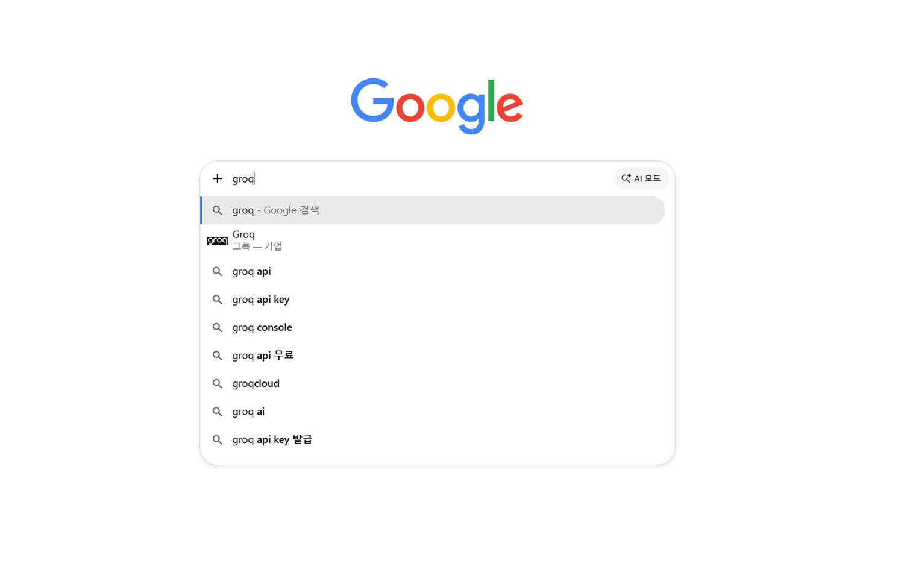
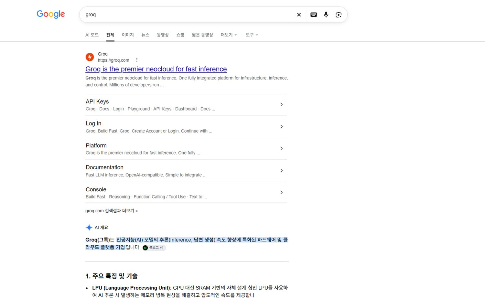
사이트 오른쪽 위의 주황색 START BUILDING 버튼을 누릅니다.
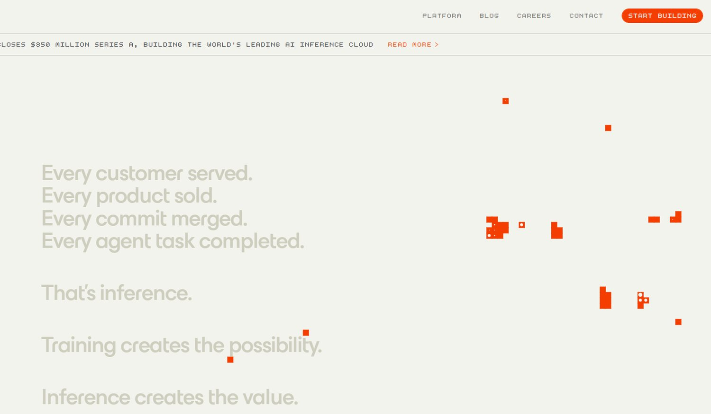
로그인 화면에서 구글 계정, 깃허브 계정, 이메일 중 편한 방법을 고르면 됩니다. 처음이라면 이 화면에서 계정이 새로 만들어집니다.
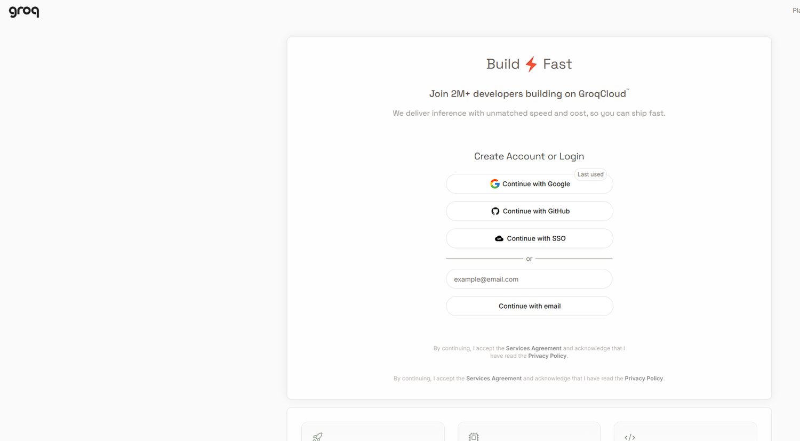
로그인하면 대시보드가 열립니다. 키를 만들려면 오른쪽 위의 API Keys 메뉴를 누릅니다.
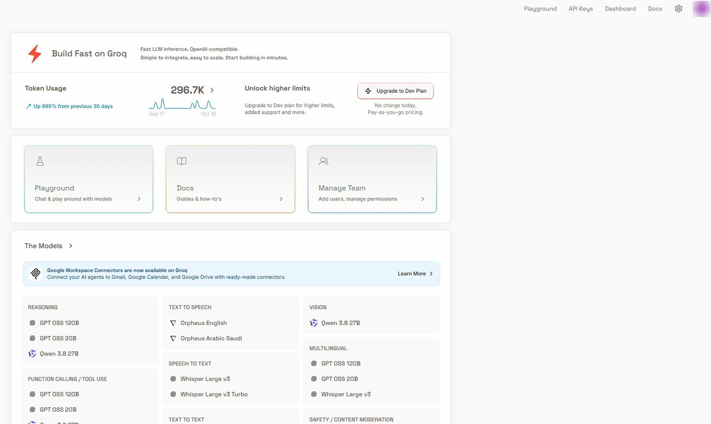
API Keys 화면에서 새 키를 만들려면 오른쪽 위의 Create API Key 버튼을 누릅니다.
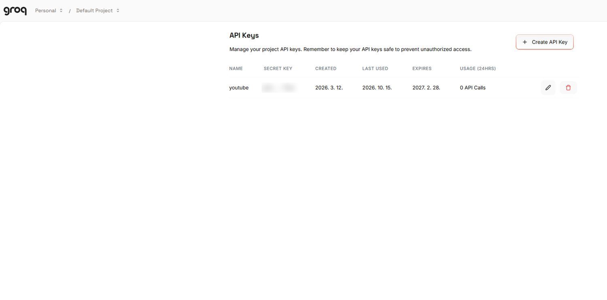
키 만들기 창에서 표시 이름(Display Name)에 알아보기 쉬운 이름을 적고, 만료 기간을 정합니다. 만료 없음이 기본이고 7일, 30일, 60일, 90일, 직접 날짜를 정하는 Custom 중에서 고를 수 있습니다. 만료일을 정했다면 그 전에 새 키로 바꿔 주셔야 합니다.
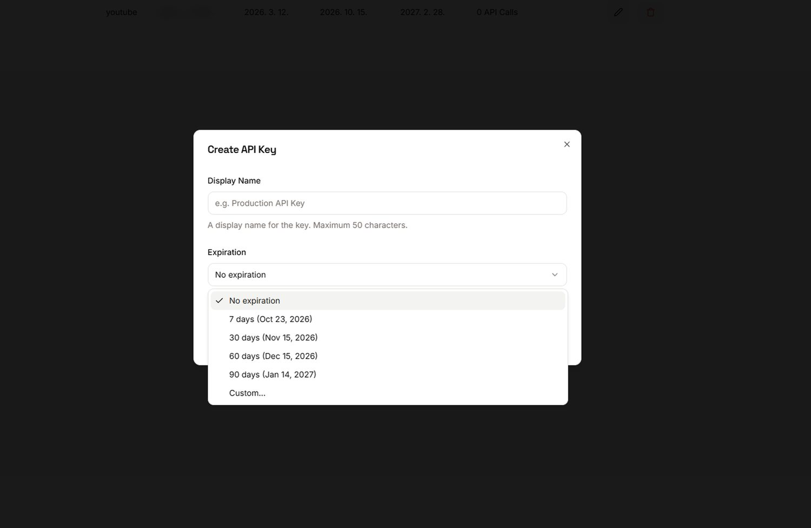
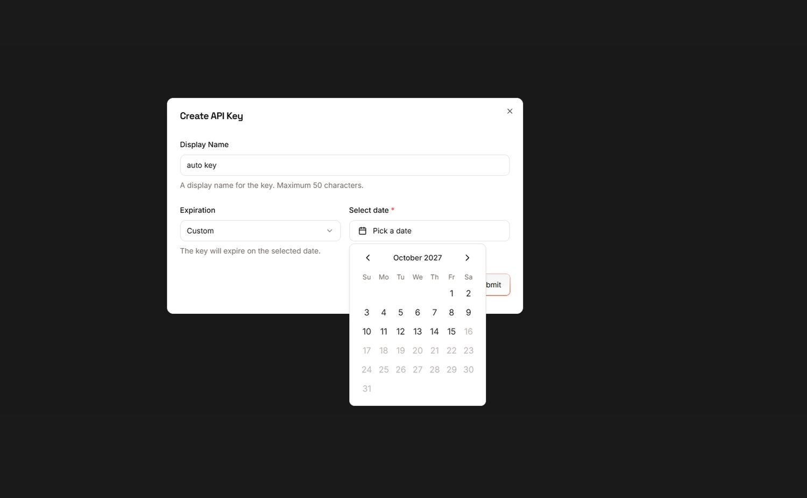
이름과 만료 기간을 정했다면 오른쪽 아래의 Submit을 누릅니다.
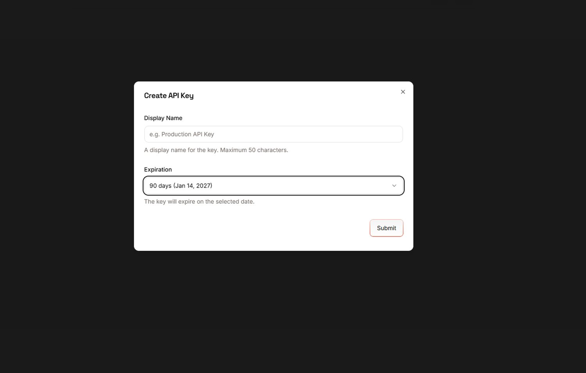
키가 만들어졌습니다. 이 창에서만 키 전체를 볼 수 있으니 Copy로 복사해 메모장 같은 곳에 바로 붙여 넣어 저장해 두세요. 키를 잃어버렸다면 목록의 휴지통 아이콘으로 삭제하고 새로 만들면 됩니다. (설명서 화면의 키는 예시 값입니다.)
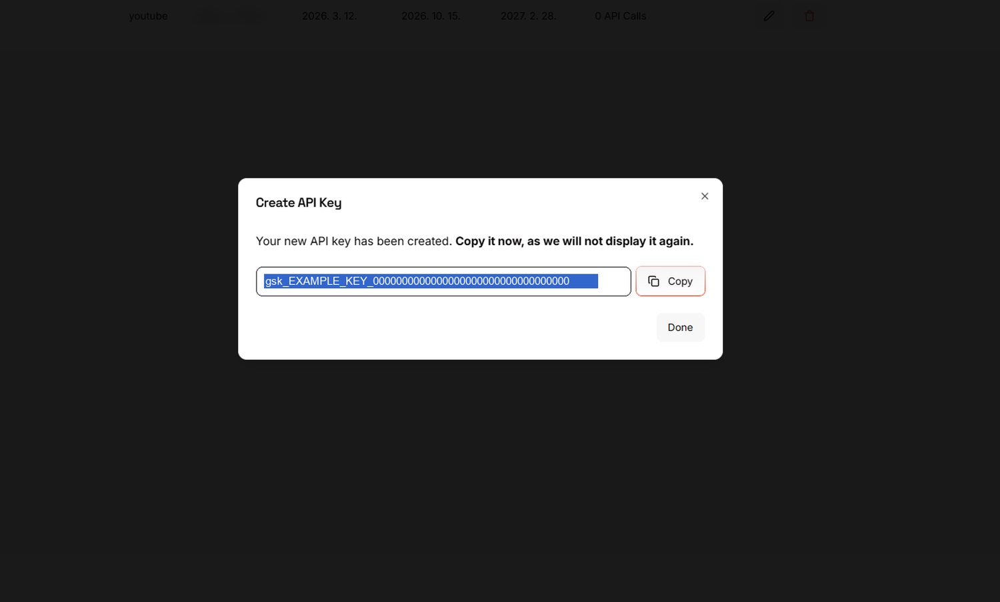
3-4 프로그램에 키 입력하기
프로그램 위쪽 메뉴에서 설정 탭을 열고 맨 아래의 API 키 섹션으로 내려갑니다. 칸별 설명은 다음과 같습니다.
- OpenAI API 키 — 가사·컨셉 작성과 커버아트·썸네일 이미지 (필수)
- Groq API 키 — 자막 타이밍(음성 인식) (필수)
- Kie.ai API 키 — Suno 음악 생성에 필요
- YouTube Data API 키 — 선택 사항
- 복사해 둔 키를 해당 칸에 붙여 넣습니다. 앞뒤에 공백이 들어가지 않게 주의하세요.
- 각 칸 오른쪽의 연결 테스트를 누르면 방금 입력한 키가 맞는지 확인합니다.
- 아래 저장을 누르면 이 컴퓨터에 저장됩니다. 비워 두고 저장하면 기존 값이 유지됩니다.
설정 탭 맨 아래 API 키 발급 안내 항목에도 같은 요약이 들어 있습니다.
3-5 (선택) YouTube Data API 키 만들기
YouTube Data API 키는 선택 사항입니다. 입력하지 않아도 믹스 생성과 업로드를 모두 쓸 수 있습니다. 입력란에는 연결 테스트 버튼이 있어 키가 맞는지 확인할 수 있습니다. 아래 3-5와 3-6의 구글 클라우드 설정 중 앞부분(프로젝트 만들기, API 사용 설정)은 업로드를 위한 OAuth 설정(3-6)에도 필요하므로, 업로드를 쓰신다면 3-5의 1~5단계는 꼭 따라 하세요.
1단계. 구글 검색창에 구글 클라우드 콘솔이라고 입력합니다.
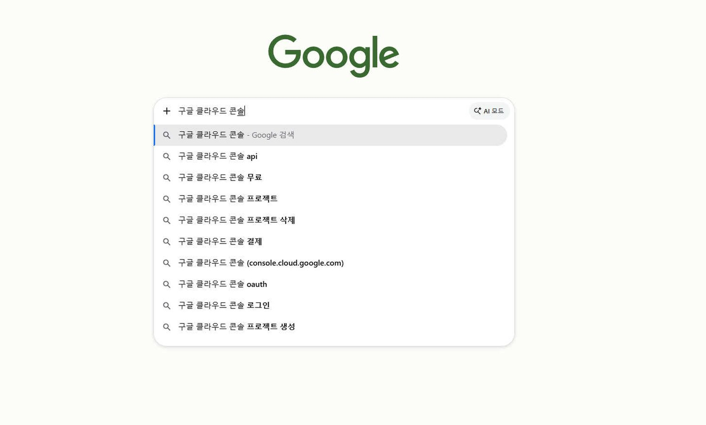
2단계. 검색 결과 맨 위의 Google Cloud Console, 주소가 cloud.google.com인 공식 사이트를 클릭합니다.
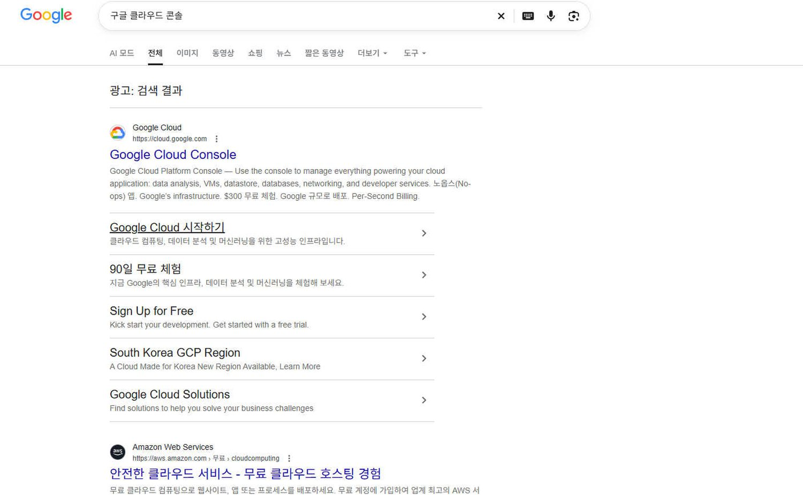
3단계. 콘솔 안내 화면에서 파란색 내 콘솔로 이동 버튼을 누릅니다. 구글 계정에 로그인되어 있지 않다면 로그인 화면이 나오니 키를 만들 계정으로 로그인하세요. 처음이라면 약관 동의나 무료 체험 안내가 나올 수 있는데, 이 설정만 필요하다면 체험을 시작하지 않고 넘어가도 됩니다.
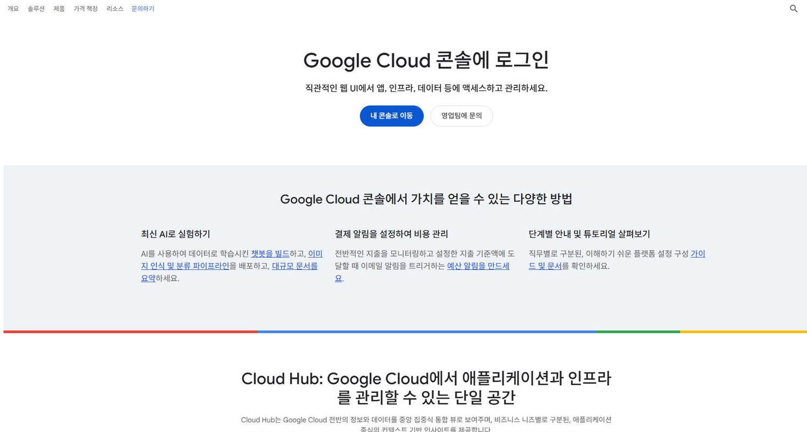
4단계. 새 프로젝트 만들기. 위쪽의 작업 중인 프로젝트 이름을 누르면 프로젝트 선택 창이 열립니다. 이미 만든 프로젝트가 있다면 골라 써도 되고, 이 설명서에서는 따로 관리하기 위해 새로 만듭니다. 창 오른쪽 위의 새 프로젝트를 클릭합니다. (설명서 화면에서는 프로젝트 번호와 다른 프로젝트 이름을 가렸습니다.)
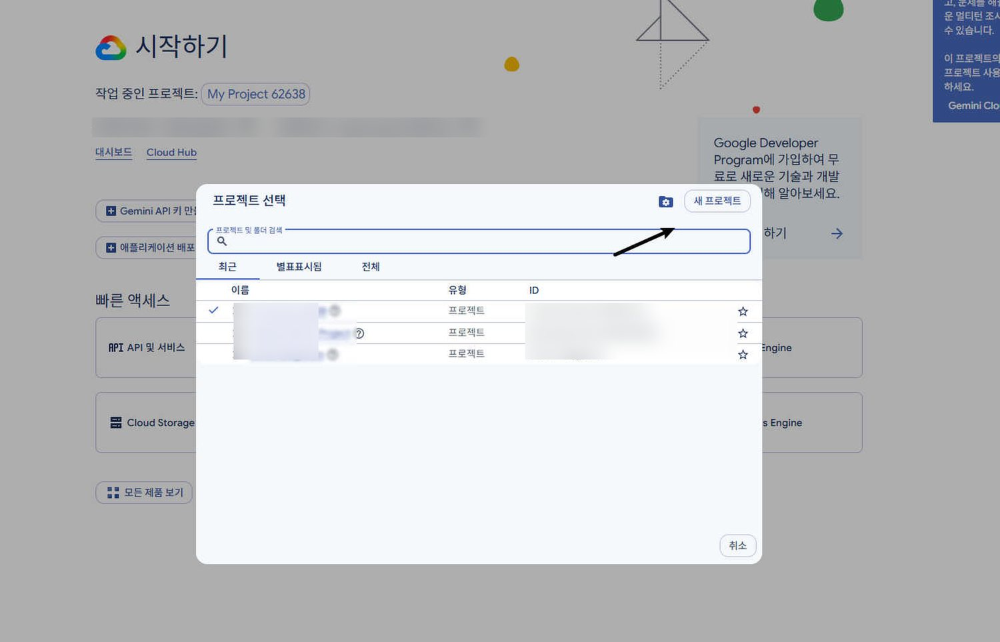
프로젝트 이름에는 알아보기 쉬운 이름(예: youtube key)을 적습니다. 프로젝트 ID는 자동으로 만들어지고 나중에 바꿀 수 없습니다. 상위 리소스는 조직 없음 그대로 두고 만들기를 누릅니다.
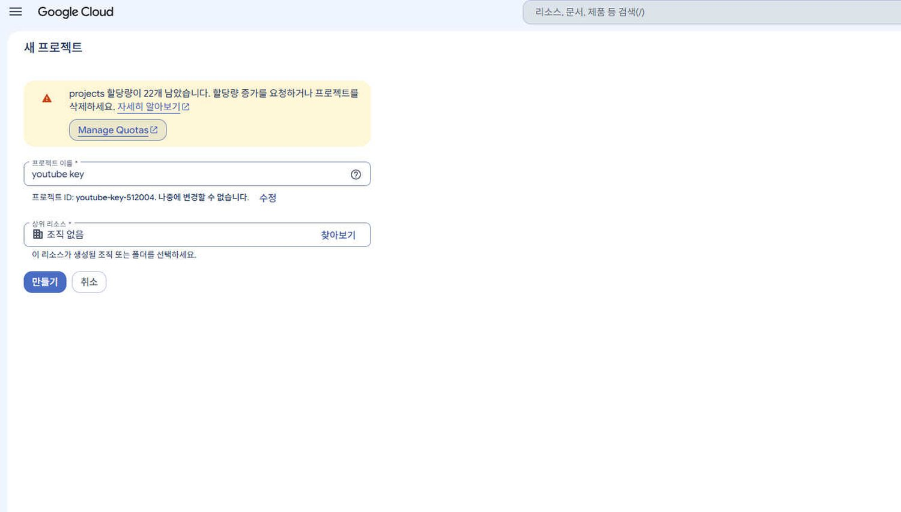
5단계. YouTube Data API v3 사용 설정. 프로젝트가 만들어지면 왼쪽 위 세 줄 메뉴에서 API 및 서비스 → 라이브러리를 클릭합니다.
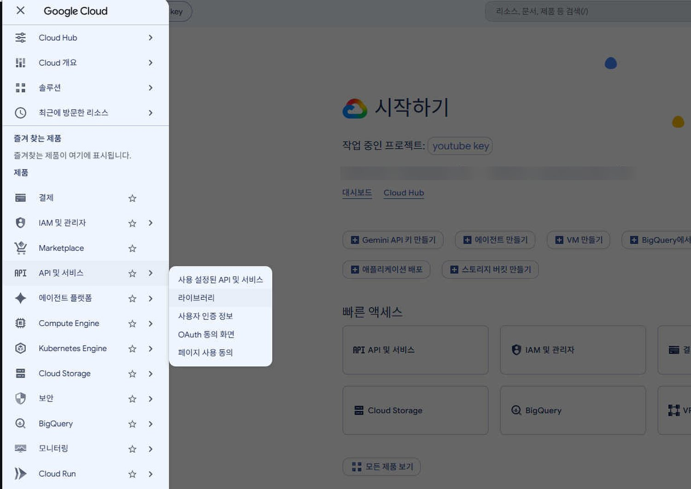
가운데 검색창에 YouTube Data API v3를 입력하고, 검색 결과의 YouTube Data API v3 카드를 클릭합니다.
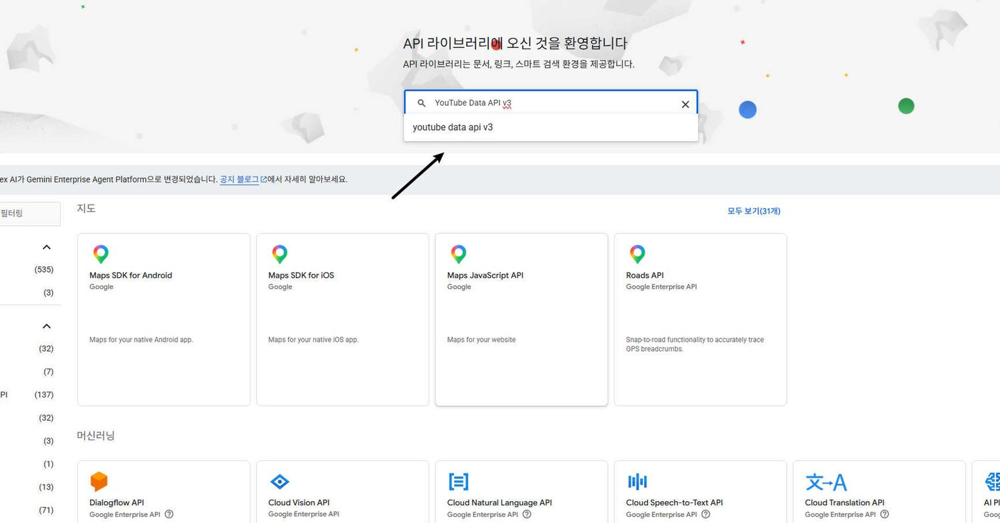
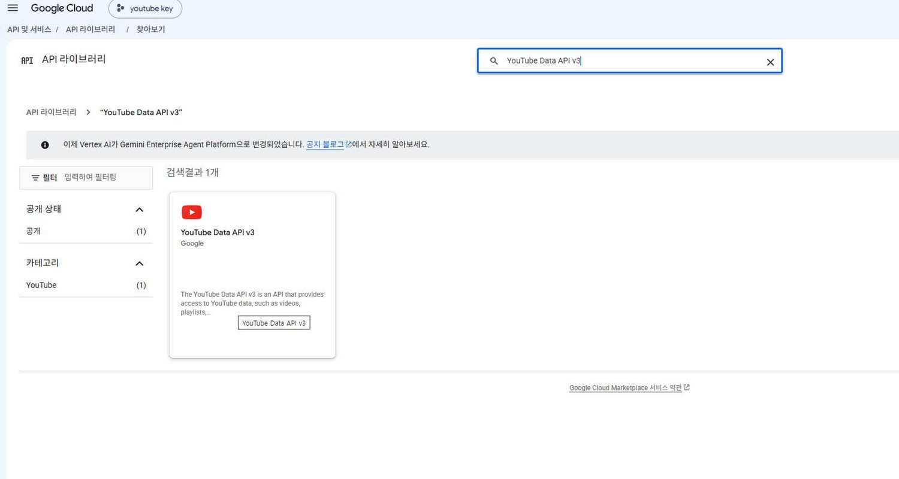
제품 세부정보 화면에서 파란색 사용 버튼을 누르면 이 프로젝트에서 유튜브 데이터 API를 쓸 수 있게 됩니다.
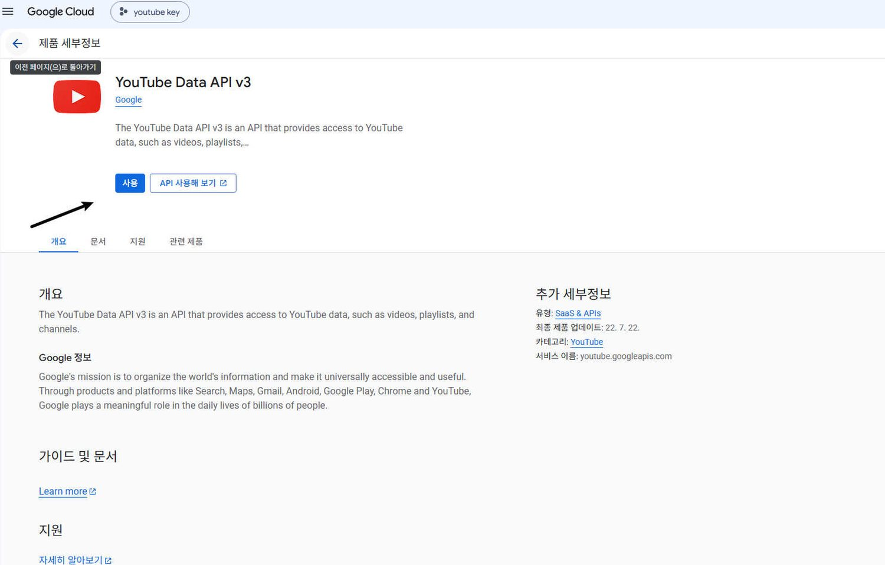
상태가 사용 설정됨으로 바뀐 것을 확인하세요. 아래 탭의 할당량 및 시스템 한도에서는 하루 사용량 한도를 볼 수 있습니다. 이제 왼쪽 메뉴에서 사용자 인증 정보를 클릭합니다.
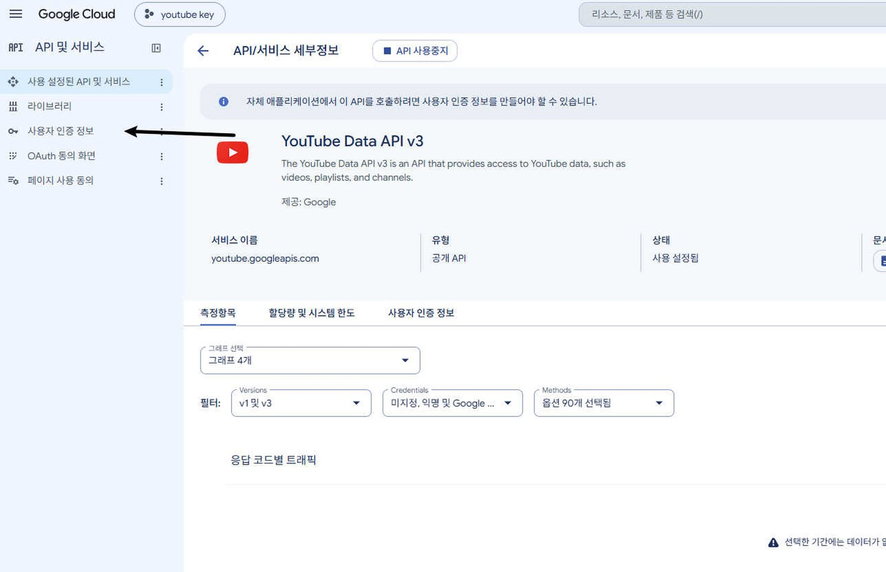
6단계 (선택). API 키 만들기. 사용자 인증 정보 화면에서 위쪽의 사용자 인증 정보 만들기 버튼을 눌러 펼쳐진 메뉴에서 첫 번째 항목 API 키를 클릭합니다. (두 번째 항목인 OAuth 클라이언트 ID는 3-6에서 다룹니다.)
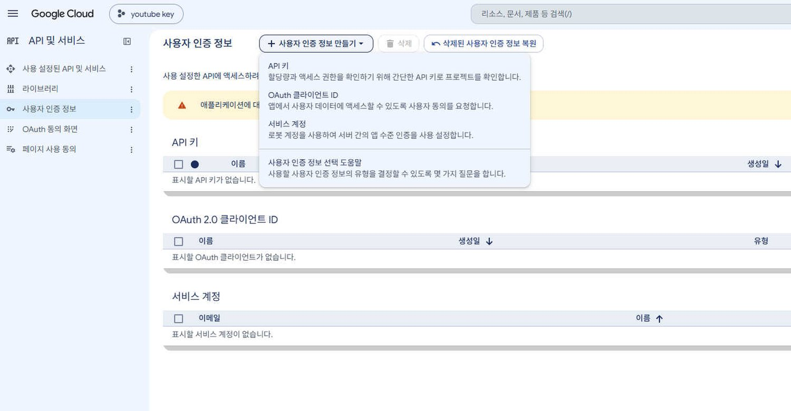
오른쪽에 API 키 만들기 창이 열립니다. 이름 칸은 알아보기 쉽게 바꿔도 됩니다. API 제한사항 선택 칸에서 필터에 youtube라고 입력하면 나오는 YouTube Data API v3를 체크하고 확인을 누르세요. 이렇게 하면 키가 유출되더라도 유튜브 데이터 API 외에는 쓸 수 없어서 안전합니다. 애플리케이션 제한사항은 없음 그대로 두고 만들기를 클릭합니다.
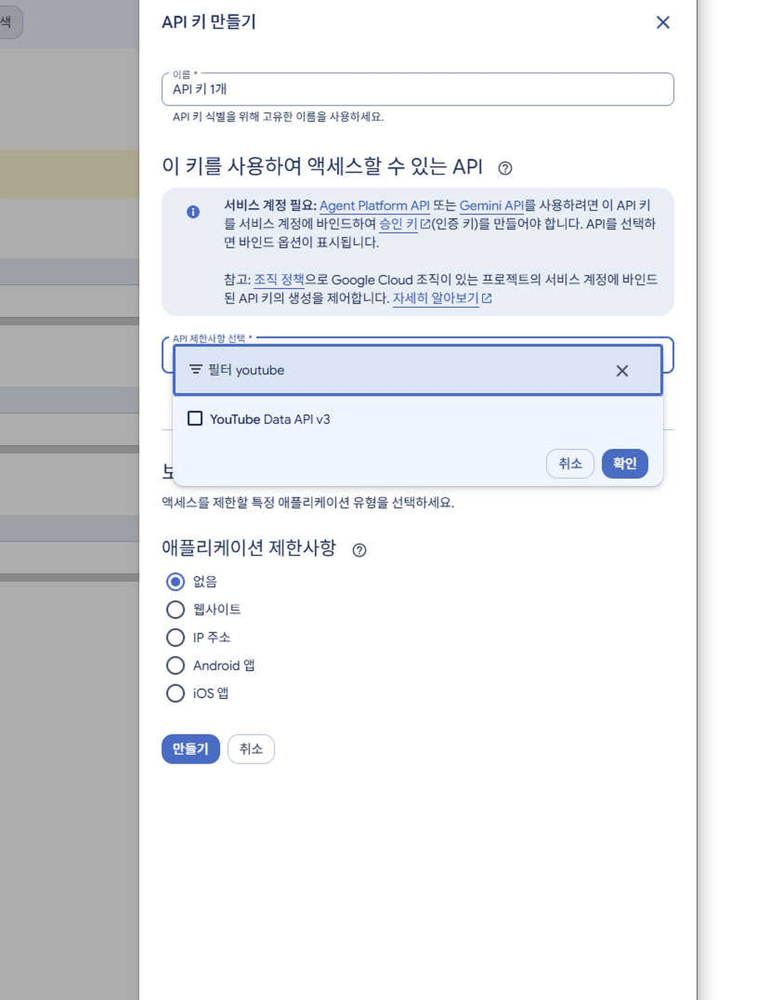
API 키 생성 완료 창에서 오른쪽 끝의 복사 아이콘을 눌러 키를 복사하고 닫기를 누릅니다. 키는 창을 닫은 뒤에도 사용자 인증 정보 화면의 API 키 목록에서 다시 확인할 수 있습니다. 복사한 키는 설정 탭의 YouTube Data API 키 칸에 넣고 연결 테스트를 눌러 확인합니다. (설명서 화면의 키는 가렸습니다.)
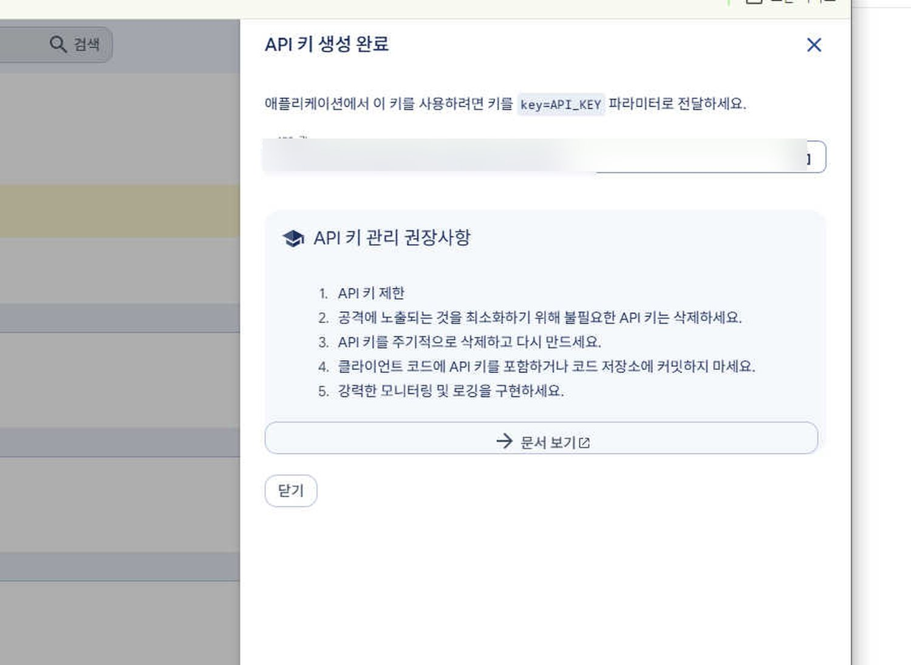
키를 넣었는데 오류가 난다면 ① 키 앞뒤에 공백이 들어가지 않았는지, ② 구글 클라우드의 API 및 서비스에서 YouTube Data API v3가 "사용 설정됨"인지, ③ API 제한사항에서 YouTube Data API v3를 체크했는지, ④ 하루 사용량 한도를 넘기지 않았는지 확인하세요. 그래도 안 되면 키를 새로 만들어 다시 입력하면 됩니다.
3-6 유튜브 업로드 연결 준비 (OAuth)
영상을 내 유튜브 채널에 자동으로 올리려면 API 키가 아니라 OAuth라는 로그인 방식으로 연결해야 합니다. 구글 클라우드에서 OAuth 동의 화면과 클라이언트 ID를 만들고, 내 계정을 테스트 사용자로 등록한 뒤, 프로그램의 채널·예약 탭에서 채널을 추가합니다. 설정은 한 번만 하면 됩니다. 이 방식은 별도의 결제가 필요하지 않습니다.
이 단계는 3-5의 1~5단계(프로젝트 만들기, YouTube Data API v3 사용 설정)에서 이어집니다. 영상을 올릴 유튜브 채널의 구글 계정으로 진행하는 것을 권합니다.
3-6-1 OAuth 동의 화면 만들기
구글 클라우드 콘솔에서 왼쪽 위의 세 줄 메뉴를 열고 API 및 서비스에 마우스를 올린 뒤, 오른쪽에 펼쳐지는 하위 메뉴에서 OAuth 동의 화면을 클릭합니다. 위쪽에 앞에서 만든 프로젝트 이름이 표시되어 있어야 합니다.
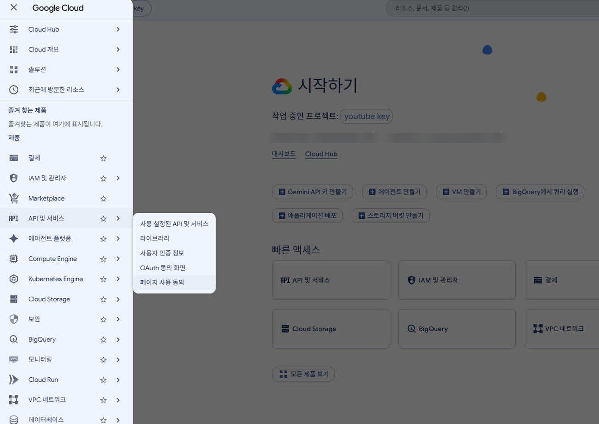
"아직 구성되지 않았다"고 나오는 것은 처음이라면 정상입니다. 가운데의 시작하기 버튼을 클릭합니다.
첫 단계 앱 정보에서 앱 이름은 동의 화면에 표시될 이름입니다(예: youtube upload). 사용자 지원 이메일은 목록에서 내 이메일을 선택하고 다음을 누릅니다.
두 번째 단계 대상에서 개인 구글 계정으로 쓴다면 외부를 선택합니다. (내부는 같은 조직의 사용자만 쓸 수 있어 개인 계정에서는 선택할 수 없는 경우가 많습니다.) 외부는 테스트 모드로 시작해서, 테스트 사용자 목록에 넣은 계정만 쓸 수 있습니다.
세 번째 단계 연락처 정보에는 구글이 프로젝트 변경 사항을 알려 줄 이메일 주소를 입력합니다. 내 이메일을 쓰면 됩니다.
마지막 단계 완료에서 구글 API 서비스 사용자 데이터 정책에 동의한다는 체크 상자를 켜고 계속을 누릅니다.
네 단계가 모두 체크된 것을 확인하고 만들기를 클릭합니다. 눌러야 동의 화면이 실제로 만들어집니다.
3-6-2 OAuth 클라이언트 ID 만들기
동의 화면이 만들어지면 OAuth 개요 화면이 나옵니다. 오른쪽의 OAuth 클라이언트 만들기 버튼을 클릭합니다.
애플리케이션 유형을 고르는 목록이 열립니다. Mellodrift는 내 컴퓨터에서 웹 화면으로 열리므로 웹 애플리케이션을 선택합니다.
입력 항목이 나타납니다. 이름은 그대로 두거나 알아보기 쉽게 바꿔도 됩니다(콘솔에서 구분하는 용도일 뿐입니다). 승인된 JavaScript 원본은 비워 둡니다. 그 아래 승인된 리디렉션 URI가 가장 중요한 항목입니다. URI 추가 버튼을 눌러 아래 주소를 정확히 입력하세요.
Mellodrift의 승인된 리디렉션 URI는 아래 한 개입니다. 글자 하나라도 다르면 인증이 실패하니 그대로 붙여 넣으세요.http://localhost:9135/oauth/callback
(Mellodrift는 포트 9135를 사용합니다. 다른 프로그램 설명서에 나오는 3030, 3031, 4281 같은 주소는 Mellodrift와 무관합니다.) 입력 후 만들기를 누르면 설정이 적용되는 데 몇 분에서 몇 시간이 걸릴 수 있습니다.
OAuth 클라이언트 생성됨 창이 나옵니다. 가운데에 클라이언트 ID가 보이고 아래에 클라이언트 보안 비밀번호(시크릿)가 보입니다. (설명서 화면에서는 두 값을 가렸습니다.) 이 창을 닫으면 보안 비밀번호를 더는 볼 수 없으니, 지금 복사 아이콘으로 복사하거나 JSON 다운로드로 파일을 저장해 두세요. 값을 보관했다면 확인을 누릅니다.
확인을 누르면 클라이언트 목록으로 돌아옵니다. 방금 만든 웹 클라이언트가 OAuth 2.0 클라이언트 ID 표에 보입니다. 이 이름을 누르면 설정을 다시 볼 수 있습니다. 이제 왼쪽 메뉴의 대상을 클릭해서 테스트 사용자를 등록하러 갑니다.
3-6-3 테스트 사용자 등록
대상 화면입니다. 게시 상태가 테스트 중이고 사용자 유형은 외부입니다. 테스트 중에는 테스트 사용자만 이 앱에 로그인할 수 있으므로, 아래 테스트 사용자의 Add users 버튼을 눌러 내 계정을 추가합니다.
오른쪽에 사용자 추가 창이 열립니다. 입력칸에 영상을 올릴 유튜브 채널의 구글 이메일 주소를 입력하고 엔터를 누르면 칩으로 표시됩니다. 여러 계정이면 이어서 더 추가하고 저장을 누릅니다. (설명서 화면에서는 이메일을 가렸습니다.)
저장하면 테스트 사용자 목록에 방금 추가한 이메일이 나옵니다. 이제 이 계정으로 프로그램에서 인증할 준비가 끝났습니다.
테스트 중 상태에서는 인증이 일주일쯤 지나면 만료되어 다시 인증해야 할 수 있습니다. 이 기간은 구글 정책이므로 정확한 내용은 구글 공식 문서에서 확인하세요.
3-6-4 프로그램에서 채널 연결하기
프로그램의 채널·예약 탭을 엽니다. 아래쪽의 채널 추가 영역에 구글 클라우드에서 만든 Client ID와 Client Secret을 붙여 넣고 ➕ 채널 추가를 누르면 Google 로그인 창이 열립니다.
- 로그인 창에서 테스트 사용자로 등록한 구글 이메일로 로그인합니다.
- "앱이 내 구글 계정에 접근하려 한다"는 동의 화면에 요청 권한(유튜브 동영상 관리, 유튜브 계정 보기)이 나옵니다. "확인되지 않은 앱" 경고가 먼저 나타나면 내가 직접 만든 앱이므로 고급 → 계속으로 진행하고, 마지막으로 허용을 누릅니다.
- 인증이 끝나면 "✅ 인증 완료! 채널이 연결되었습니다"라는 창이 나오고, 프로그램에는 "✅ 연결됨: 채널 이름"이 표시됩니다.
- 채널 목록에서 채널별 기본 공개 설정(비공개, 일부 공개, 공개)을 정할 수 있고, 연결 해제로 연결을 끊을 수 있습니다.
같은 Client ID/Secret으로 여러 채널(계정·브랜드 채널)을 차례로 추가할 수 있습니다. 채널 수에는 제한이 없고, 채널마다 다른 컨셉·카테고리로 따로 운영할 수 있습니다. 인증 창은 5분 안에 완료해야 하며, 시간이 지나면 다시 시도하세요.
| 증상 | 확인할 것 |
|---|---|
로그인 중 redirect_uri_mismatch 오류 | 클라이언트에 등록한 리디렉션 URI가 정확히 http://localhost:9135/oauth/callback 인지 확인하세요. |
| "접근이 거부되었다"는 오류 | 로그인한 계정이 테스트 사용자로 등록되어 있는지 확인하세요. |
| 설정을 방금 바꿨는데 안 돼요 | 설정이 적용되는 데 몇 분에서 몇 시간이 걸릴 수 있습니다. 잠시 뒤 다시 시도하세요. |
| 잘 되다가 갑자기 인증이 풀렸어요 | 테스트 중 앱은 인증이 일정 기간 뒤 만료될 수 있습니다. 채널·예약 탭에서 다시 채널 추가를 진행하세요. |
클라이언트 시크릿과 JSON 파일은 비밀번호와 같습니다. 노출됐다면 구글 클라우드의 클라이언트 화면에서 비밀번호를 새로 만들거나 클라이언트를 삭제하고 다시 만든 뒤 프로그램에 다시 입력하세요. 연결을 완전히 끊으려면 프로그램에서 채널 연결을 해제하고, 구글 계정의 서드파티 액세스 설정에서도 앱을 제거할 수 있습니다.
4. 홈 화면 한눈에 보기
프로그램을 열면 홈 화면이 나옵니다. 맨 위에는 홈, 보관함, 채널·예약, 설정 네 개의 메뉴가 있습니다. 홈에서는 새 믹스를 만들고, 보관함에서는 이미 만든 영상을 다시 보고, 채널·예약에서는 업로드할 채널과 자동 운영을 관리하고, 설정에서는 품질과 모델을 조절합니다.
홈 화면은 위에서 아래로 번호 순서대로 내려가며 고르면 됩니다. ① 카테고리, ② 보컬 스타일, ③ 상황과 무드, ④ 믹스 설정, 그리고 맨 아래 생성 시작 버튼입니다. ②와 ③은 선택 사항이라 건너뛰어도 됩니다.
5. 카테고리 선택
첫 번째 단계는 카테고리 선택입니다. 지금 25개의 카테고리가 준비되어 있고, 카드를 누르면 선택되면서 체크 표시가 붙습니다. 카테고리는 곡의 장르뿐 아니라 보컬을 넣을지, 가사 언어는 무엇인지, 자막을 기본으로 켤지까지 함께 정해 줍니다.
| 구분 | 카테고리 | 특징 |
|---|---|---|
| 연주곡 중심 (8) | 수면·이완 앰비언트, 클래식, 노동요(작업·공부 BGM), 재즈 카페, 카페 음악, 보사노바, 시네마틱 OST, 힙합 인스트루멘탈 | 가사가 없어서 자막 걱정 없이 긴 배경 음악 영상을 만들기에 좋습니다. |
| 모든 곡에 보컬 (12) | 90~2000년대 가요, 해외 팝송, 케이팝, 시티팝, 어쿠스틱 포크, 알앤비, 밴드 록, 한국 인디, 트로트, 한국 힙합, 라틴 팝, 컨트리 | 한국어 카테고리는 한국어 가사, 라틴 팝은 스페인어 가사, 나머지는 주로 영어 가사로 만들어집니다. |
| 보컬+연주곡 혼합 (5) | 러닝·워크아웃, 드라이브, 하우스, 신스웨이브, 레게 | 네 곡 중 세 곡은 노래, 한 곡은 연주곡으로 구성되어 계속 듣기에 지루하지 않습니다. |
카드 아래에는 작은 배지가 붙어 있습니다. 별 모양 추천은 처음 시작하기 좋은 카테고리입니다. 그 옆의 정책 안전 / 보통 / 주의는 유튜브 정책 위험도를 알려 주는 표시입니다. 주의가 붙은 카테고리는 실제 가수의 스타일과 지나치게 닮지 않도록 곡과 제목을 확인하며 쓰시길 권합니다.
6. 보컬 스타일 (선택)
두 번째 단계는 보컬 스타일이고 선택 사항입니다. 아무것도 고르지 않으면 카테고리에 맞는 기본 보컬이 자동으로 쓰입니다. 원하는 목소리 느낌이 있다면 여기서 고르세요. 한국 발라드 남성·여성, 케이팝 아이돌 톤, 트로트, 랩, 라틴, 레게, 컨트리까지 19가지가 있습니다.
이 목록은 특정 사람의 목소리를 복제하는 기능이 아닙니다. 음악 AI에게 "이런 느낌으로 불러 달라"고 전달하는 스타일 설명입니다. 그래서 같은 스타일을 골라도 곡마다 조금씩 다른 목소리가 나올 수 있습니다. 보컬 없음을 고르면 연주곡만 만들어집니다.
7. 상황과 무드 (선택)
세 번째 단계는 상황과 무드이고 이것도 선택 사항입니다. 비 오는 밤, 새벽 집중, 도시 야간 드라이브, 편안한 카페, 잠들기 전, 이별 후 저녁 같은 12가지 상황이 있습니다.
상황을 고르면 곡의 분위기와 템포, 영상 제목, 커버 그림과 썸네일의 장면과 색감까지 그 상황에 맞춰 하나의 컨셉으로 통일됩니다. 한 번 더 누르면 선택이 해제됩니다. 상황을 고르지 않으면 AI가 카테고리에 맞게 알아서 정합니다.
8. 믹스 설정
네 번째 단계는 믹스 설정입니다.
- 트랙 수 — 영상에 들어갈 곡의 개수입니다. 슬라이더를 왼쪽 끝에 두면 자동으로, AI가 컨셉에 맞게 12곡에서 20곡 사이로 정합니다. 직접 정하려면 최대 30곡까지 고를 수 있습니다. 처음에는 한두 곡으로 작게 시험해 보시길 권합니다.
- 트랙 간 크로스페이드 — 곡과 곡이 겹치며 넘어가는 시간입니다. 기본은 2.5초이고 1초에서 6초까지 조절할 수 있습니다. 길게 하면 부드럽게 이어지고, 짧게 하면 곡이 또렷하게 바뀝니다.
- 보컬 — 자동은 카테고리 기본을 따릅니다. 항상 보컬은 모든 곡을 노래로, 연주곡만은 가사 없는 곡으로만 만듭니다. 연주곡 카테고리에서 노래를 넣어 보거나 노래 카테고리를 연주곡으로 바꿔 볼 때 쓰세요.
- 해상도 — 1920×1080(풀HD, 기본)과 1280×720 중에서 고릅니다. 화질보다 속도가 중요할 때는 720p를 쓰면 영상 조립이 훨씬 빨라집니다.
영상 조립 시간은 해상도, 곡 수, 자막 사용 여부에 따라 크게 달라집니다. 처음에는 1~2곡, 720p로 먼저 확인하고, 마음에 들면 곡 수를 늘려 풀HD로 만드세요.
9. 가사 자막과 연출 스타일
9-1 가사 자막
가사 자막은 영상 아래에 가사를 보여 주는 기능입니다. 가사가 중심인 카테고리를 고르면 자동으로 켜지고, 연주곡 카테고리에서는 꺼져 있습니다. 필요하면 직접 켜고 끌 수 있습니다. 자막 타이밍은 Suno가 알려 주는 단어별 시각을 사용하고, 그것이 없으면 음성 인식(Groq 등)으로 보완해서 노래와 자막이 잘 맞도록 되어 있습니다.
9-2 연출 스타일
연출 스타일은 영상 전체의 분위기를 한 번에 정하는 선택입니다. 배경의 움직임과 입자 효과, 음량 그래프, 곡명이 놓이는 위치까지 한꺼번에 바뀝니다. 기본 스타일과 자동을 포함해서 모두 여덟 가지입니다.
| 스타일 | 모습 |
|---|---|
| 기본 | 커버 이미지를 화면 가득 보여 주고, 아래쪽에 곡명과 음량 그래프를 얹는 가장 단정한 형태입니다. |
| 카페 | 따뜻한 색감에 화면이 천천히 흔들리고, 따뜻한 빛 입자가 위로 떠오릅니다. |
| 비 오는 밤 | 어두운 푸른 톤 위로 빗줄기가 내립니다. 집중해서 듣는 음악에 잘 어울립니다. |
| 눈 내리는 겨울 | 화면이 느리게 확대되며 눈송이가 내립니다. |
| 레코드 플레이어 | 돌아가는 엘피판 안에 커버 그림이 들어가고, 옆에 곡명이 표시됩니다. |
| 미니멀 앨범아트 | 깔끔한 카드 안에 커버를 담고 막대 그래프를 보여 줍니다. |
| 시네마틱 | 위아래에 검은 띠가 들어가는 와이드 화면에 필름 질감이 더해집니다. 영화 같은 분위기를 원할 때 좋습니다. |
| 자동 | 카테고리에 어울리는 스타일을 프로그램이 대신 정해 줍니다(아래 표). |
9-3 "자동" 스타일이 고르는 연출
| 적용되는 스타일 | 카테고리 |
|---|---|
| 눈 내리는 겨울 | 수면·이완 앰비언트 |
| 비 오는 밤 | 노동요, 시티팝 |
| 레코드 플레이어 | 90~2000년대 가요, 알앤비, 트로트, 힙합 인스트루멘탈 |
| 미니멀 앨범아트 | 클래식, 해외 팝송, 한국 인디 |
| 카페 | 재즈 카페, 카페 음악, 어쿠스틱 포크, 보사노바, 라틴 팝, 레게, 컨트리 |
| 시네마틱 | 시네마틱 OST, 밴드 록, 신스웨이브, 드라이브 |
| 기본 | 케이팝, 하우스, 러닝·워크아웃, 한국 힙합 |
9-4 웨이브폼 디자인
연출 스타일 아래의 웨이브폼 디자인은 기본 스타일에서 화면 하단의 음량 그래프 모양을 고르는 항목입니다. 바, 라인, 도트, 스펙트럼, 그리고 표시 안 함이 있습니다. 다른 연출 스타일은 자기만의 그래프를 쓰기 때문에, 이 선택은 기본 스타일에서만 적용됩니다.
10. 믹스 만들기 (실제 생성 과정)
이제 실제로 만들어 보겠습니다. 이 예시에서는 한국 인디·어쿠스틱 카테고리, 상황은 비 오는 밤, 트랙 수는 시험 삼아 2곡, 해상도는 풀HD, 가사 자막은 카테고리가 자동으로 켠 상태, 연출 스타일은 자동으로 골랐습니다.
모든 선택이 끝나면 맨 아래의 원클릭 믹스 생성 시작 버튼을 누릅니다. 이 순간부터는 아무것도 하지 않으셔도 됩니다.
시작 전에 Kie.ai, OpenAI, Groq 키가 모두 입력되어 있어야 합니다. 비어 있으면 "설정 탭에서 API 키를 먼저 입력해주세요" 안내와 함께 어떤 키가 빠졌는지 알려 줍니다.
화면이 진행 상황 화면으로 바뀝니다. 위쪽에 작업 시작, 컨셉 구상, 트랙 생성, 영상 조립, 썸네일, 완료 여섯 단계가 표시되고, 지금 하고 있는 단계가 강조됩니다.
10-1 컨셉 구상
첫 번째는 컨셉 구상입니다. 선택한 카테고리와 상황에 맞춰 믹스의 주제와 제목, 색감, 그림체를 정합니다. 이 단계는 보통 몇십 초면 끝납니다.
10-2 트랙 생성
다음은 곡별 작업입니다. 곡마다 가사를 쓰고, Suno에 곡을 요청하고, 완성된 곡의 커버 그림을 그립니다. 한 곡에 대략 1~2분 정도 걸립니다.
10-3 영상 조립
곡이 모두 만들어지면 영상 조립이 시작됩니다. 음량을 곡마다 고르게 맞추고, 가사 자막을 입히고, 연출 스타일을 적용해서 곡별 영상을 만든 뒤 하나로 이어 붙입니다. 이 단계가 가장 오래 걸립니다. 이 예시에서는 풀HD로 6분 30초짜리 영상을 만드는 데 17분 정도 걸렸습니다. 곡 수가 많거나 해상도가 높을수록 더 길어집니다.
10-4 썸네일
마지막으로 유튜브 썸네일을 만듭니다. AI가 문구를 그려 넣고, 그림 속 글자가 정확한지 한 번 더 검사합니다. 이 검사에서 글자가 틀리면 한 번 더 그려 줍니다.
10-5 시간과 비용
정리하면, 곡 하나를 만드는 데 Suno 크레딧이 곡당 약 12개 들고, 그림과 글을 만드는 데 OpenAI 사용료가 조금 듭니다. 그래서 처음에는 두 곡 정도로 시험해 보고, 결과가 마음에 들면 곡 수를 늘리는 방법을 권합니다.
참고로 개발 중 시험 기록에서 12곡(약 40분) 롱폼을 풀HD로 조립하는 데 영상 길이의 4배쯤인 약 2시간 36분이 걸렸습니다. 사용하시는 컴퓨터 성능에 따라 달라지니, 긴 믹스는 시간 여유가 있을 때 만드세요.
11. 중간에 실패했을 때
만드는 도중 인터넷이 끊기거나 서비스에 문제가 생겨서 실패할 수 있습니다. 이때 화면에는 실패한 이유와 함께 이어서 만들기 버튼이 나타납니다.
이어서 만들기를 누르면 이미 완성된 곡과 커버는 그대로 재사용하고, 실패한 곡부터 다시 만듭니다. 그래서 크레딧과 시간이 낭비되지 않습니다. 자동 운영 중에 실패하면 프로그램이 알아서 최대 두 번까지 이어서 만들기를 시도합니다.
12. 결과 확인
생성이 끝나면 결과 확인 화면이 자동으로 열립니다. 맨 위에 완성된 영상을 바로 재생해서 확인할 수 있고, 그 아래에 영상 제목이 표시됩니다. 제목은 컨셉에 맞춰 AI가 만들어 주고, 채널 언어 설정이 한국어이면 한국어로 나옵니다.
12-1 유튜브 썸네일
아래 유튜브 썸네일 영역에는 만들어진 썸네일과, 그림 속 글자가 입력한 문구와 일치하는지 검증한 결과가 표시됩니다. 초록색 체크가 보이면 글자가 정확하다는 뜻입니다. 썸네일의 메인 문구와 보조 문구는 직접 고칠 수 있습니다. 문구를 바꾸고 이 문구로 썸네일 다시 만들기를 누르면 새 썸네일이 만들어집니다. 다시 만들 때마다 이미지 비용이 조금 듭니다.
12-2 설명란과 챕터
설명란도 만들어져 있습니다. 컨셉을 소개하는 글과 챕터 목록, 그리고 AI로 만들었다는 안내 문구가 들어 있습니다. 이 칸은 업로드하기 전에 자유롭게 수정할 수 있습니다.
챕터는 곡이 시작하는 시각마다 자동으로 만들어집니다. 유튜브에서 영상 아래 구간 표시로 쓰입니다. 참고로 유튜브는 챕터가 세 개 이상일 때 구간으로 인식하니, 곡 수가 너무 적으면 챕터가 표시되지 않을 수 있습니다.
13. 유튜브 업로드
결과 화면 맨 아래가 업로드 영역입니다. 채널에서는 미리 연결해 둔 유튜브 채널 중에서 고릅니다(연결 방법은 3-6). 채널이 하나도 연결되어 있지 않으면 먼저 3-6을 진행하세요.

공개 설정은 비공개, 일부 공개, 공개 중에서 고릅니다. 처음에는 비공개로 올려서 유튜브 스튜디오에서 확인하신 뒤 공개하시길 권합니다. 예약 공개에 날짜와 시각을 정하면 영상은 비공개로 올라간 다음, 그 시각에 유튜브가 자동으로 공개해 줍니다. 컴퓨터가 꺼져 있어도 공개됩니다.
YouTube에 업로드 버튼을 누르면 영상과 제목, 설명, 썸네일이 함께 올라갑니다. AI로 만든 콘텐츠라는 표시도 자동으로 설정됩니다. 새로 만든 믹스를 처음부터 다시 시작하려면 새로 만들기를 누르세요.
14. 보관함
보관함에는 지금까지 만든 믹스가 모두 모여 있습니다. 카드를 누르면 다시 재생해서 확인할 수 있습니다. 홈 화면 아래의 최근 만든 믹스에도 같은 영상이 보입니다.
영상 파일 자체는 프로그램의 데이터 폴더에 저장되어 있습니다. 다른 곳에 보관하고 싶으면 그 폴더에서 복사하세요. 데이터 폴더를 여는 방법은 17장에 있습니다.
15. 채널과 예약 — 자동 운영
채널·예약 탭에서는 연결된 유튜브 채널을 확인하고, 자동 운영 스케줄을 만들 수 있습니다. 자동 운영은 정해 둔 요일과 시각에 믹스를 만들고, 완성되면 유튜브에 올려 주는 기능입니다. (채널 연결은 3-6)
15-1 새 스케줄 만들기
새 스케줄을 만들 때는 먼저 이름을 정하고, 올릴 채널과 카테고리, 상황·무드를 고릅니다. 트랙 수(비우면 AI가 12~20곡으로 결정)와 해상도, 연출 스타일도 홈 화면과 똑같이 정할 수 있습니다.
이어서 요일(여러 개 선택 가능)과 시각을 정하고, 공개 설정을 고릅니다. 예약 공개 칸에는 만든 뒤 몇 시간 뒤에 공개할지 숫자로 입력합니다. 영상이 만들어지는 데 시간이 걸리니, 정해 둔 시각에 맞춰 공개하고 싶다면 이 칸을 활용하세요.
15-2 스케줄 목록과 지금 실행
저장된 스케줄은 목록에 나타납니다. 지금 실행을 누르면 시간을 기다리지 않고 바로 한 번 돌려 볼 수 있고, 결과는 실행 기록에 성공인지 실패인지, 어떤 제목으로 올라갔는지 남습니다. 스케줄은 켜고 끄거나(일시 중지) 삭제할 수 있습니다.
자동 운영에서 꼭 알아 둘 점
① 프로그램이 켜져 있고 컴퓨터가 깨어 있어야 실행됩니다.
② 정해 둔 시각에 꺼져 있었다면 3시간 이내에 켜졌을 때만 따라잡아 실행합니다.
③ 한 번에 한 작업만 실행합니다.
④ 실행할 때마다 Suno 크레딧과 OpenAI 사용료가 소모됩니다.
처음에는 곡 수를 적게 하고 비공개로 올려서 결과를 확인한 뒤 본격적으로 쓰시길 권합니다.
16. 설정
설정 탭에서 품질과 모델을 조절합니다.
- 음악 생성 — Suno 모델을 고를 수 있고 기본값은 V6입니다. 특별한 이유가 없다면 기본값을 그대로 쓰시길 권합니다.
- 텍스트 모델 / 이미지 모델 — 텍스트 모델은 컨셉과 가사를 쓰는 모델, 이미지 모델은 커버와 썸네일을 그리는 모델입니다. 비워 두면 기본 모델이 쓰이고, 내 계정 모델 불러오기를 누르면 내 계정에서 쓸 수 있는 모델 목록이 나타납니다.
- 커버아트 품질 / 썸네일 품질 — 높을수록 선명하지만 이미지 비용이 늘어납니다. 커버는 곡마다 한 장씩 그리니 보통을, 영상당 한 장인 썸네일은 높음을 권장합니다.
- 채널 언어 — 영상 제목과 설명, 썸네일 문구, 곡 제목을 어떤 언어로 만들지 정합니다. 한국 시청자를 위한 채널이면 한국어를 두세요. 가사 언어는 이 설정과 상관없이 카테고리를 따릅니다.
- 곡 길이 범위(초) — 곡마다 이 범위 안에서 자연스럽게 길이가 정해집니다(고정이 아닙니다). 기본은 150초~210초이고 30초에서 360초까지 입력할 수 있습니다. 바꾼 뒤에는 저장 버튼을 눌러 주세요.
그 아래 API 키 섹션은 3-4를 참고하세요.
17. 프로그램 메뉴 (설치형)
설치형 프로그램에는 평소에 숨겨져 있는 메뉴가 있습니다. 키보드의 Alt 키를 누르면 창 맨 위에 Mellodrift 메뉴가 나타납니다.
- 라이선스 정보 — 내 키와 만료일, 현재 버전을 확인합니다.
- 기기 초기화 — 다른 컴퓨터로 옮길 때 씁니다. 누르면 이 컴퓨터의 등록이 해제되고 프로그램이 종료되며, 새 컴퓨터에서 같은 키로 다시 활성화할 수 있습니다.
- 업데이트 확인 — 새 버전이 있는지 알려 주고, 있으면 내려받아 적용할 수 있습니다. 프로그램을 켤 때는 공지가 있으면 한 번 표시됩니다.
- 데이터 폴더 열기 — 설정과 만든 영상이 저장된 폴더가 열립니다.
18. 활용 팁과 자주 묻는 질문
18-1 비용과 시간 아끼는 방법
- 처음에는 곡 수를 1~2곡, 해상도는 720p로 먼저 확인하세요. 마음에 들면 곡 수를 늘리고 풀HD로 만드세요.
- Kie.ai와 OpenAI는 소액(5달러)으로 시작해 사용량을 보고 충전하세요. OpenAI는 월 지출 한도(Usage limits)를 걸어 두면 안전합니다.
- 썸네일 다시 만들기는 누를 때마다 이미지 비용이 듭니다. 문구를 충분히 확인한 뒤 누르세요.
- 자막이 필요 없는 영상은 가사 자막을 꺼 두면 영상 조립이 더 빨라집니다.
18-2 잘 어울리는 조합
- 공부·작업용 영상 → 노동요 + 비 오는 밤 + 비 오는 밤 연출
- 잠들기 전 영상 → 수면 앰비언트 + 눈 내리는 겨울 연출
- 가사를 보여 주고 싶다면 → 보컬 카테고리에서 자막을 켜 보세요.
18-3 문제가 생기면
| 증상 | 확인할 것 |
|---|---|
| 생성 시작 시 "API 키를 먼저 입력해주세요" | 설정 탭의 OpenAI, Groq, Kie.ai 키가 모두 입력·저장되어 있는지 확인하세요. |
| 만드는 도중 실패했어요 | 인터넷 연결과 각 서비스의 크레딧 잔액을 확인한 뒤 이어서 만들기를 누르세요. 완성된 곡은 재사용됩니다. |
| 곡이 만들어지지 않거나 오류가 나요 | Kie.ai 크레딧이 남아 있는지, 키가 맞는지 설정 탭의 연결 테스트로 확인하세요. |
| 이미지(커버·썸네일)가 안 만들어져요 | OpenAI 크레딧 잔액과 키를 확인하세요. |
| 유튜브 업로드가 안 돼요 | 채널이 연결되어 있는지, 3-6의 리디렉션 URI(http://localhost:9135/oauth/callback)와 테스트 사용자 등록을 확인하세요. |
| 프로그램이 시작되지 않고 "포트 사용 중"이라고 나와요 | 같은 프로그램이 이미 실행 중인지 확인하세요. |
| 이미 다른 컴퓨터에 등록된 키라는 안내가 나와요 | 이전 컴퓨터에서 기기 초기화를 한 뒤 새 컴퓨터에서 다시 활성화하세요. |
그래도 해결되지 않으면 구매하신 곳으로 문의해 주세요.